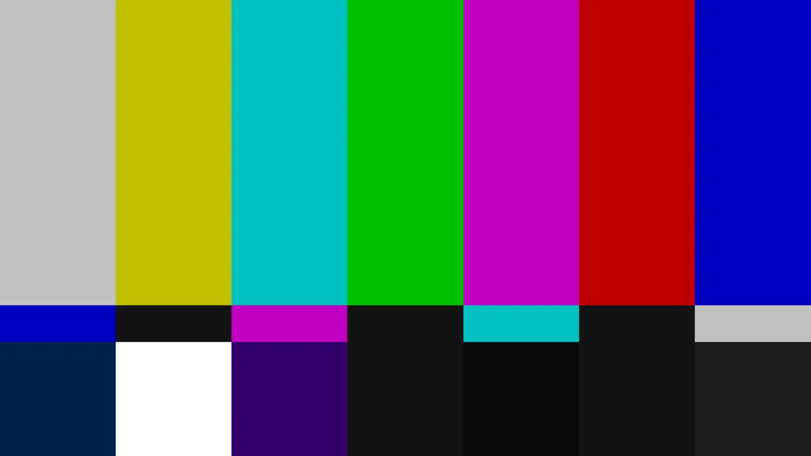
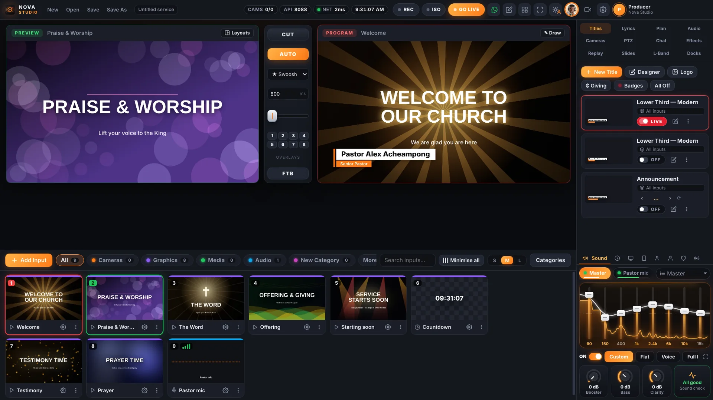
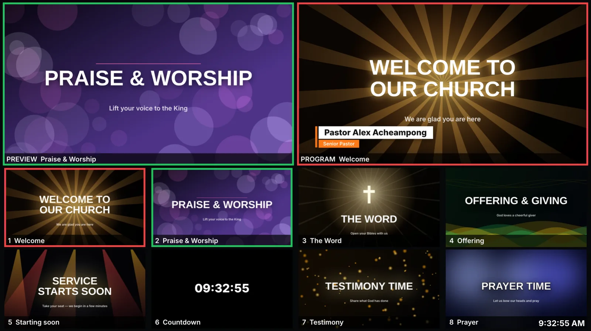
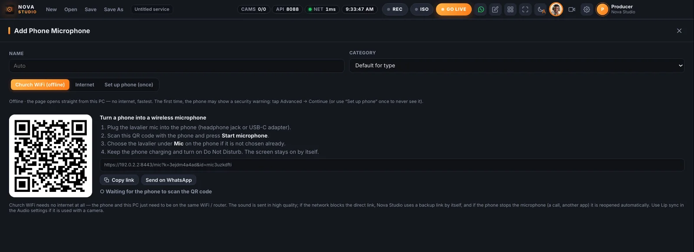
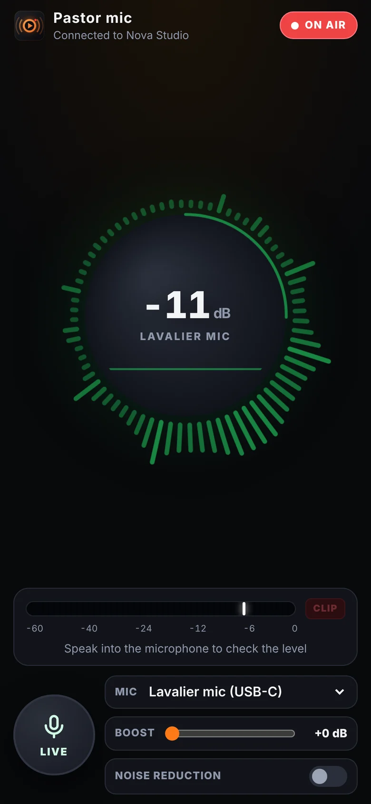
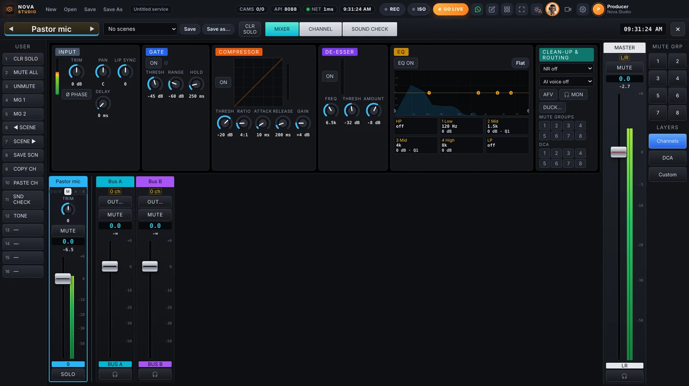
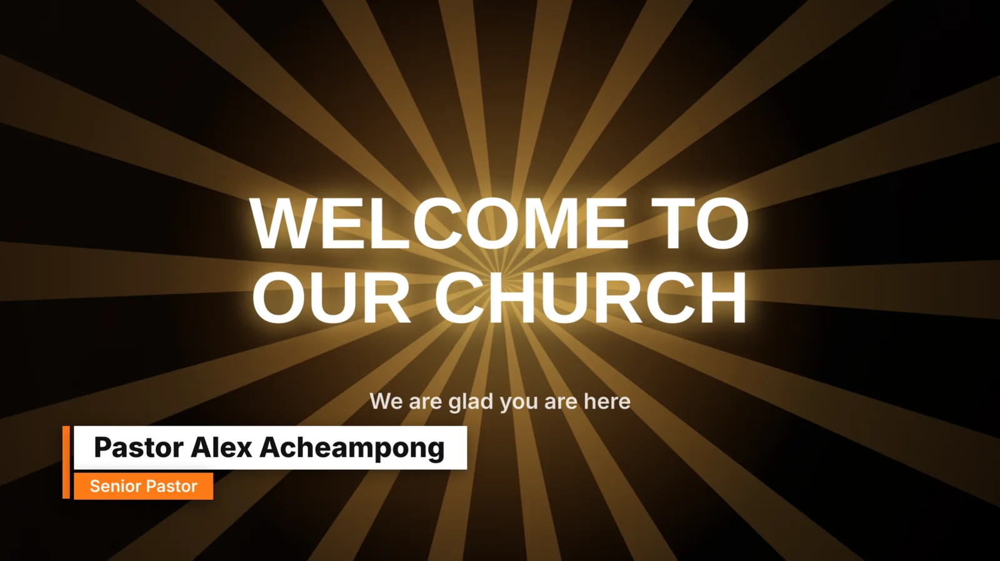
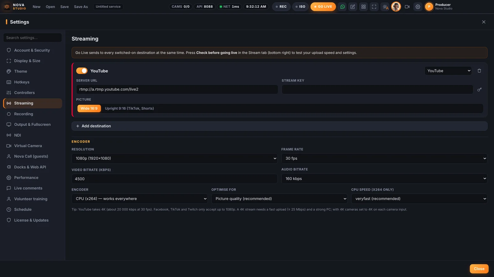
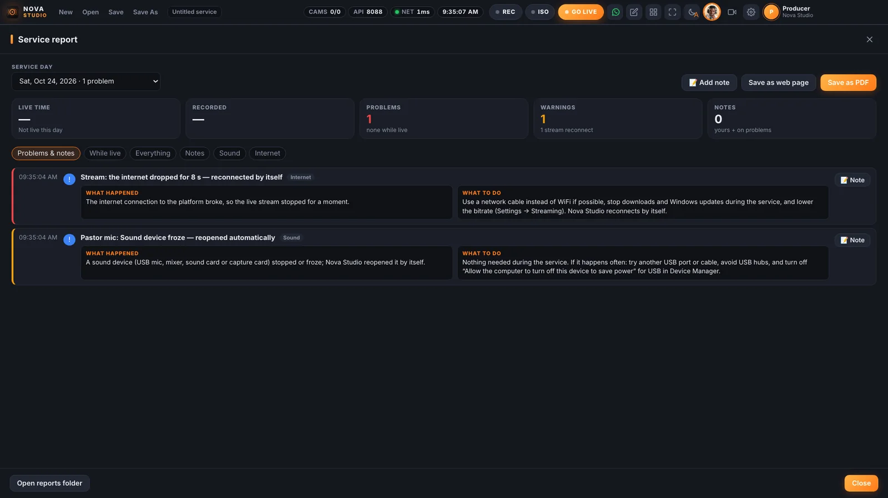

Your whole church broadcast, run from one screen.
Switch cameras, mix the sound, put up lyrics and titles, and stream to YouTube, Facebook and TikTok at the same time. Nova Studio is made in Ghana for church media teams — powerful for producers, simple for volunteers.


One program instead of a rack of machines.
- Video switcherPreview and Program, CUT, AUTO, T-bar, 8 overlays, stingers, multi-layer scenes.
- Sound deskFaders, EQ, compressor, gate, AI noise removal, two extra mixes for PA and stream.
- Graphics132 ready titles, lyrics, giving and MoMo cards, 180 animated church graphics.
- EncoderYouTube, Facebook, TikTok and Twitch at once — wide and upright.
- RecorderProgram recording plus a clean file for every camera.
Inside Nova Studio
Pick a screen below — it cuts to the monitor, just like an input in Nova Studio. Keys 1 to 9 work too.

Every phone becomes a camera or a wireless mic.
Scan a QR code and a phone joins as a camera with sound — with a tally light, zoom, torch and its own clean recording. Plug a lavalier into another phone and it becomes a wireless microphone with a live sound monitor.
- Works on the church WiFi with no internet
- Reconnects by itself if WiFi drops or a call comes in
- Remote guests join from a link and see the church


A real mixing console, and sound that keeps going.
Every microphone, instrument and video gets a channel strip: gate, compressor, de-esser, four-band EQ and AI voice isolation that removes fans and generator noise. Sound Check tells volunteers which channel is silent, humming or too loud — and what to do.
- Separate mixes for the stream, the PA or an overflow room
- Lip sync for every camera and mixer feed
- A frozen USB mic or a sleeping projector can’t stop the sound

Lyrics, names and giving details, clean on every screen.
Put the preacher’s name up with one click, move through lyrics with the arrow keys, and show MoMo and bank details with a QR code. Titles can fill themselves from Excel or Google Sheets for announcements and the order of service.
- 132 ready titles and a designer for your own
- Comments from online viewers on the stream only — the projector stays clean
- Draw on the live picture from a tablet

Go live everywhere, and know exactly what happened.
One GO LIVE button sends the service to every platform at once. If the internet drops, the stream reconnects by itself and a safety recording keeps running. After the service, the report explains every problem in plain words — with what to do next time.
- Check your upload speed before you go live
- Clean recordings of every camera for editing
- Sermon clips for TikTok, Reels and Shorts, with captions


Made for volunteers who learn on Sunday morning.
AlexDev, the built-in assistant
Ask in plain English or Pidgin — “camera e no dey show” — and it checks the live system and opens the right setting. It works offline.
Practice mode
Run a full rehearsal, GO LIVE included, without sending anything to the internet. A guided tour and exercises tick themselves off.
Your keys, your panels
Hotkeys on any keyboard, Stream Deck, MIDI faders and X-keys — or run the show from a tablet with Nova Remote.
Nothing lost if the PC crashes
Nova Studio puts the program, titles, lyrics and stream back where they were, and keeps the PC awake while you are live.
Book a free demo
We show Nova Studio with your own cameras and your Sunday programme, in person or online.
- Send the formIt opens WhatsApp (or email) with your details filled in.
- We confirm the timeUsually the same day.
- See it workingAbout 45 minutes — bring your questions and your team.
Prefer to call? 055 191 8658 · officialcodetheweb@gmail.com